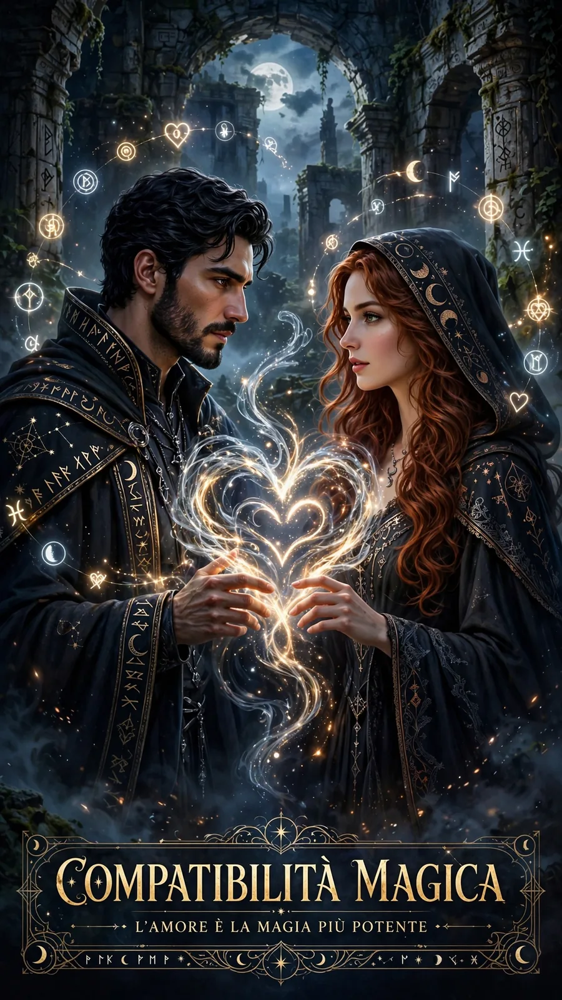

Compatibilità Zodiacale: Come le Stelle Rivelano l'Affinità tra i Segni

L'Astrologia come Mappa dell'Affinità
Da millenni l'astrologia interpreta le relazioni umane attraverso la lente del cielo: ogni persona nasce sotto una costellazione precisa, con un insieme di energie e tendenze che si intrecciano in modo unico con quelle degli altri. La compatibilità zodiacale non è un verdetto definitivo, ma uno strumento di consapevolezza: conoscere le energie del proprio segno e di quello del partner aiuta a capire dove scorrono naturalmente le cose e dove invece è necessario portare attenzione, comprensione e dialogo.
Il calcolo dell'affinità cosmica si basa su secoli di osservazione astrologica. I dodici segni dello zodiaco formano una ruota simbolica in cui ogni segno si confronta con gli altri secondo angoli specifici — congiunzioni, sestili, quadrature, trigoni e opposizioni — che rivelano il tipo di dinamica energetica che si instaura tra due persone. Non esiste una coppia destinata al fallimento: esistono coppie che trovano immediatamente terreno comune e coppie che costruiscono qualcosa di più lento ma altrettanto solido attraverso la comprensione reciproca.
Elementi, Qualità e Pianeti: Le Tre Chiavi della Compatibilità
I quattro elementi — Fuoco, Terra, Aria e Acqua — costituiscono il primo filtro di compatibilità. I segni dello stesso elemento tendono a comprendersi naturalmente perché condividono un ritmo interiore simile. Fuoco e Aria si nutrono a vicenda: l'entusiasmo dei segni di Fuoco (Ariete, Leone, Sagittario) trova stimolo nell'intelletto dei segni d'Aria (Gemelli, Bilancia, Acquario). Terra e Acqua si completano: la solidità terrena di Toro, Vergine e Capricorno si armonizza con la sensibilità fluida di Cancro, Scorpione e Pesci. Le combinazioni tra elementi opposti — Fuoco con Acqua, Terra con Aria — possono essere più complesse ma anche più trasformative.
Le qualità astrologiche — Cardinale, Fissa e Mutevole — aggiungono un ulteriore livello di lettura. I segni Cardinali (Ariete, Cancro, Bilancia, Capricorno) sono iniziatori, amano avviare nuove fasi; quelli Fissi (Toro, Leone, Scorpione, Acquario) sono costanti e determinati, a volte testardi; quelli Mutevoli (Gemelli, Vergine, Sagittario, Pesci) sono adattabili e flessibili. Due segni Fissi insieme possono creare una coppia solida o una dinamica di stallo; due segni Mutevoli possono essere complici meravigliosi o mancare di stabilità.
La tavola sinoptica che trovi su questa pagina mostra in un colpo d'occhio le affinità tra tutti i dodici segni. Ogni cella è cliccabile: ti porta direttamente al calcolo tra quei due segni, con la descrizione dell'affinità, il punteggio e i profili astrologici di entrambi. Usala come mappa esplorativa: cerca il tuo segno, osserva con chi hai affinità alte e con chi le dinamiche richiedono maggiore lavoro. E ricorda: le stelle orientano, ma sono le scelte quotidiane a costruire le relazioni.
🔍 Scopri le Altre Categorie